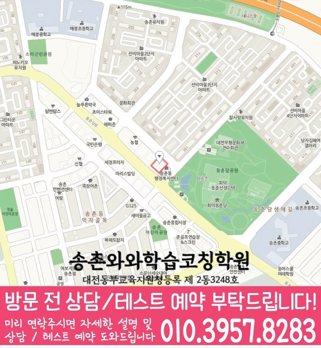

학생이 바로 적용할 공부 방법
막히는 부분을 골라 실행 방법과 기록 양식을 살펴보세요.
법동에서 안내하는 지점은 와와학습코칭센터 송촌점입니다.
자료에 기재된 안내 학년: 국어 초4~초6 / 중1~중3 / 고1~고2 · 영어 초4~초6 / 중1~중3 / 고1~고2 · 수학 초4~초6 / 중1~중3 / 고1~고2
실제 방문 주소: 대전 대덕구 동춘당로94번길 11-7 4층 402
송촌점 수업 조건·교육비·공간 사진 확인
송촌점 선생님 소개에는 「작은 목표 설정」 · 「실수 점검표 만들기」 · 「복습 간격 조절」 같은 지도 방향이 담겨 있습니다. 최근 풀이·복습 기록에서 필요한 도움을 골라 질문을 준비해 보세요. 실제 담당 과목과 수업 배정은 상담에서 확인하세요.
학습코칭 안내 이미지

이미지를 누르면 원본 크기로 확대해 작은 글씨를 읽을 수 있습니다. 공통 수업 안내이며, 실제 과목·학년·시간은 지점 정보와 함께 확인해 주세요.
지점·과목 안내
법동에서 수업을 알아보는 학생에게 안내하는 지점은 와와학습코칭센터 송촌점입니다. 지점 위치와 과목별 학년을 먼저 확인해 주세요.
제공 자료에 기재된 학년입니다. 현재 개설 과정·수업 시간·반 편성은 상담에서 확인해 주세요. 안내가 없는 학년은 수업 가능 여부가 확인되지 않았습니다.
센터 위치 안내

와와학습코칭센터 송촌점 주소: 대전 대덕구 동춘당로94번길 11-7 4층 402
지도를 누르면 원본 크기로 확대할 수 있습니다. 네이버 지도에서 주소와 이동 경로 확인 · 상담 대표전화 010-6839-8283
송촌점의 위치와 주변 교통편을 확인하세요.
송촌점 방문 주소대전 대덕구 동춘당로94번길 11-7 4층 402
카카오맵 약도에 등록된 위치와 교통정보입니다. 노선·정차 여부는 달라질 수 있으니 방문 전 확인해 주세요.
학습 상담 준비
법동에서 송촌점을 알아볼 때 공부 시작과 복습 기록을 살펴보는 안내입니다. 위의 과목별 학년·주소·교습비 자료와 아래 학생 기록을 함께 확인해 주세요.
며칠 동안 계획한 시작 시각, 실제 시작 시각, 끝낸 과제를 기록해 보세요. 시작 전 준비가 어려운지, 시작한 뒤 특정 단원에서 멈추는지 구분하면 필요한 도움을 더 정확하게 설명할 수 있습니다.
설명을 들었을 때 이해한 문제와 다음 날 도움 없이 푼 문제를 나누어 기록하세요. 정답뿐 아니라 힌트가 필요했던 줄을 남기고, 상담에서 도움을 줄이는 방법을 질문하세요.
송촌점에서 상담할 때는 시작 과제의 범위, 끝냈다고 판단할 기준, 다음에 확인할 자료를 정리하세요. 구체적인 관리 주기와 학부모 안내 방식은 실제 운영 조건을 확인해야 합니다.
학교와 일정
지역 참고 학교이며, 재원 여부나 학교별 반 운영을 뜻하지 않습니다. 재학 중인 학교의 교재·시험 범위·하교 시간을 기준으로 상담해 주세요.
자주 묻는 질문
자료에 기재된 학년은 국어 초4~초6 / 중1~중3 / 고1~고2, 영어 초4~초6 / 중1~중3 / 고1~고2, 수학 초4~초6 / 중1~중3 / 고1~고2입니다. 과학 · 사회의 해당 학년 정보는 기재되어 있지 않아 수강 가능 여부를 상담으로 확인해야 합니다. 현재 개설 과정과 수업 시간은 지점 상담에서 확인해 주세요.
센터별 교습비 자료에서 안내 금액을 확인할 수 있습니다. 희망 과목·학년을 알려 주고 현재 과정의 교습비, 교재비 등 추가 비용, 수업 요일과 시간을 확인해 주세요.
학생이 푼 문제와 실제 공부량을 어떻게 확인하는지, 오답을 언제 다시 보는지, 계획한 양을 끝내기 어려울 때 어떻게 조정하는지 물어보세요. 점검 주기와 학부모 안내 방식도 함께 확인해 주세요.
상담에서 정한 공부 시작과 복습 기록의 첫 확인 항목과 학생이 가져갈 기록을 적어 두세요. 현재 시간표와 수강 조건은 송촌점 지점 안내에서 확인하고 상담으로 확정해 주세요.
함께 읽으면 도움이 되는 자료
공부 방법부터 교재 선택과 상담 준비까지, 지금 필요한 자료를 골라 보세요.
막히는 부분을 골라 실행 방법과 기록 양식을 살펴보세요.
학생이 실제로 해 본 결과를 보고 교재의 역할을 정해 보세요.
학생의 공부 기록을 바탕으로 수업과 다음 목표를 비교해 보세요.
학생의 공부와 교재 선택을 돕는 참고 자료입니다. 지점의 개설 과목·학년과 실제 사용 교재는 별도로 확인해 주세요.
Next Step
최근 시험지와 평소 공부 습관을 알려주시면 진단 상담에서 더 구체적인 방향을 잡을 수 있습니다.
공용 학습 공간 예시 사진입니다. 송촌점의 실제 공간을 촬영한 사진은 아니며, 해당 지점의 현재 공간은 방문 상담에서 확인해 주세요.